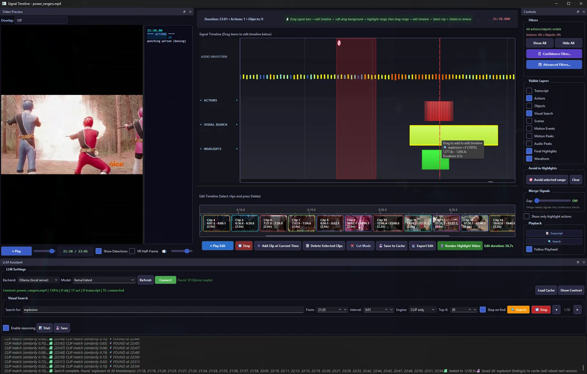

VideoHighlighter Pro finds the moments that matter — detection, tracking, and editing, running entirely offline on your own hardware. No upload. No subscription. No one else watching your footage.

Most AI highlight and auto-edit tools charge monthly because they're paying for server-side GPU time on your footage. VideoHighlighter Pro runs the entire pipeline — detection, transcription, composition — on your own machine.
A single license, not a monthly charge. The tool keeps working whether or not you renew anything.
No upload step. Client footage, unreleased cuts, and anything under NDA never touch a server you don't control.
OpenVINO acceleration on Intel Arc, or any modern GPU. No render farm required.
Each stage runs locally, in order, on the footage you point it at.
YOLO-based object detection combined with optical flow finds people, movement, and action across every frame — the raw signal everything downstream is built on.
InsightFace tracks identity across a cut so the same person stays tagged scene to scene — and can be automatically blurred for privacy when that's what the footage needs.
Whisper transcribes dialogue and narration locally, giving you a searchable, timestamped script tied directly to the timeline.
Reads spatial relationships between detected subjects to flag actual events — not just motion, but who's doing what, where, relative to whom.
CLIP-based search lets you find a moment by describing it — "the handshake," "the empty stage" — instead of scrubbing the whole timeline by eye.
A PySide6 editor separates the raw detection signal from your final cut, so you can review what the pipeline found before deciding what makes the edit.
This isn't an auto-editor that hands you a finished cut and hopes for the best. The pipeline surfaces everything it finds as reviewable signals — you choose what it looks for, review what it flagged, and keep full control of the final edit. And every build ships as a free, open-source release on GitHub first.
Offline, RSA-signed license keys — activate once, use indefinitely.
Free and open-source at the core. Pro adds the license, the polish, and support.